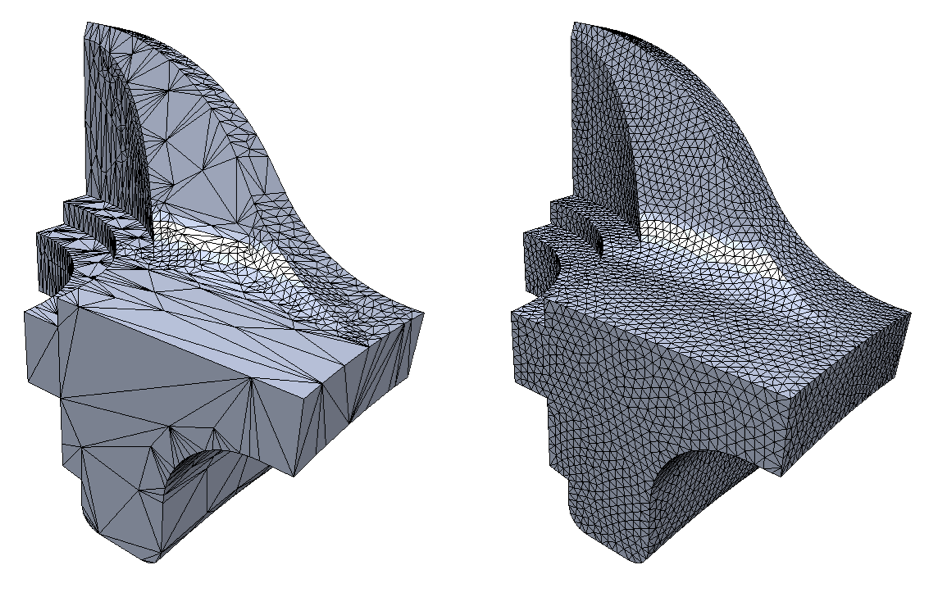
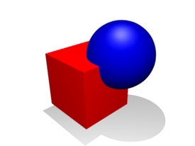

We will implement remeshing for 3D meshes in order to retopologize the mesh more uniformly. We will also implement constructive solid geometry capabilities. This includes using boolean operators to combine meshes (in a way that retains manifold geometry) such as union and difference. Union operation combines the volume of both objects and difference subtracts the volume of the second object from the first.
Often, 3D models made with sculpting tools have many polygons, usually not all uniform. This makes it hard to continue sculpting since, for example, a really big face will not have any subdivisions for sculpting to affect it in any way other than just moving the entire face. Remeshing retopologizes the mesh so that it retains its geometry but each face on the mesh is more uniform in both shape and area. After remeshing, the big face in the previous example will now be subdivided into many smaller ones but still retain its flat geometry. However, the sculptor can now sculpt on it since only some of the smaller faces will be transformed, leaving the others to still stay flat.
In some cases, a sculptor may want to add new geometry instead of sculpting on a surface. Imagine having sculpted a cup but now we want a handle. The process of remeshing and pulling smaller faces out bit by bit to make a handle is a very tedious. Even if we extrude the in dividual faces, how would we attach our extrusion back into the cup? We could make another mesh for a handle and simply jam it in. However, this results in non-manifold geometry since faces would overlap where the handle meets the cup. This is where constructive solid geometry techniques become useful. Constructive solid geometry allows us to create complex object models by conducting Boolean operations on primitives. For the cup example, we would want to conduct the union boolean operations to add the handle's mesh to the cup's mesh, making one manifold mesh of a cup with a handle.
We plan to implement remeshing and addition boolean operation for constructive solid geometry. For remeshing, we hope to end up with a more uniform mesh that still retains much of its geometry. We will have a demo of a mesh with many faces with small area and one face with significantly larger area. After remeshing, the mesh's faces should appear uniform in both shape and area. The original large faceg face should still maintain it's geometry (flat in this case). For the union boolean, we will present a demo starting with two primitive meshes currently jammed together (non-manifold) and perform the union boolean. The two meshes should combine into one mesh with no intersecting faces. We will show this by splitting the mesh open to see the inside of the mesh.
|

|

|
We hope to implement a difference boolean operation for constructive solid geometry. We hope to implement an interactive interface to choose the mesh that is subtracted from (between the two in the scene). We can demo this by subtracting a cylinder from a cube, resulting in a cube with a round hole through it.
Set-up and Remeshing
We will build off our existing Project 2 implementation in order to create the scaffolding necessary for the project. We will be researching remeshing techniques.
Remeshing
During this week, we will be mainly implementing remeshing (at least one method).
Union Boolean Operation
We will be researching Constructive Solid Geometry techniques. We hope to have a non-interactive version working by the end of week 3.
Union and Difference Boolean Operation
Our hope is to have the difference boolean operation and an interactive interface by this point so a user can manually move primitives around and add/subtract them from each other.
http://graphics.stanford.edu/courses/cs468-12-spring/LectureSlides/13_Remeshing1.pdf